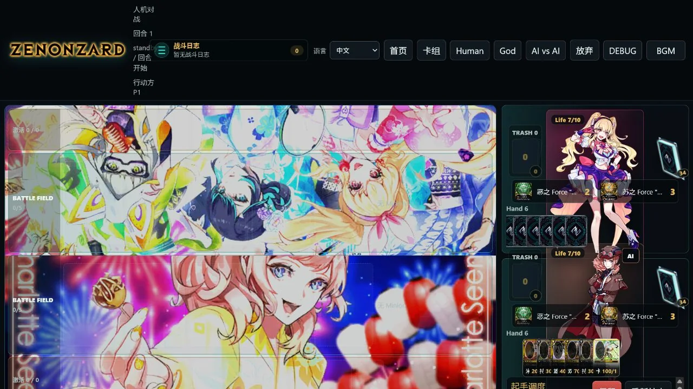
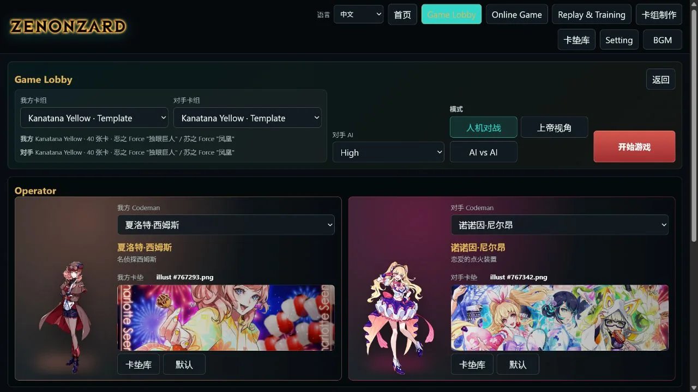
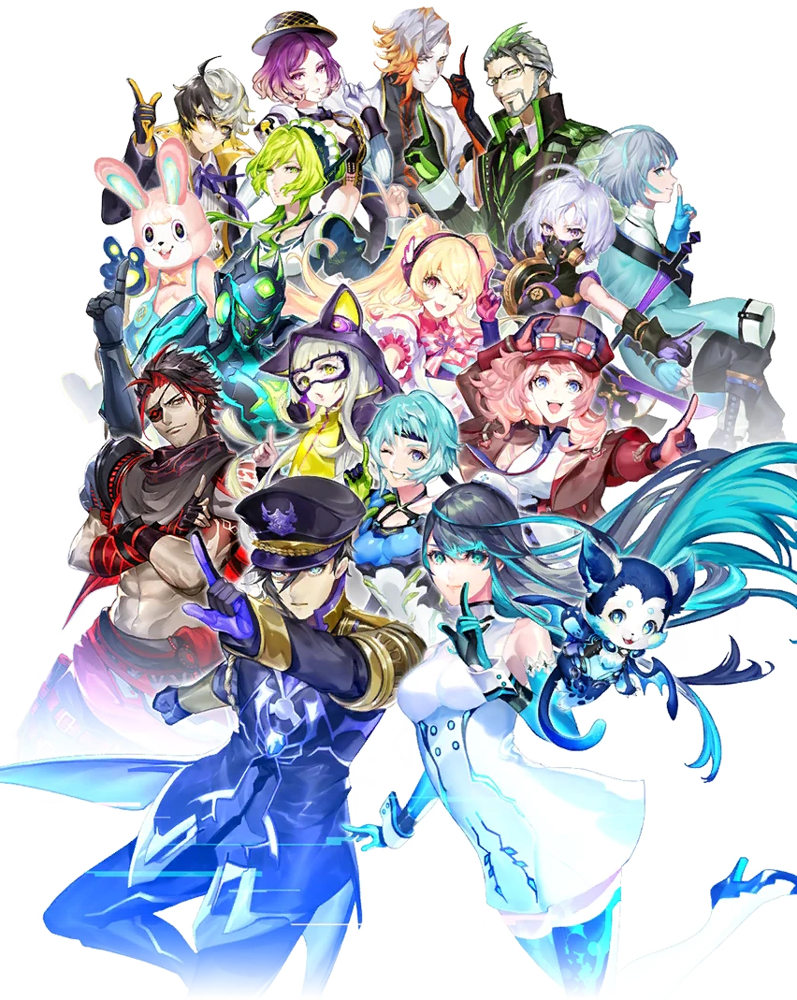
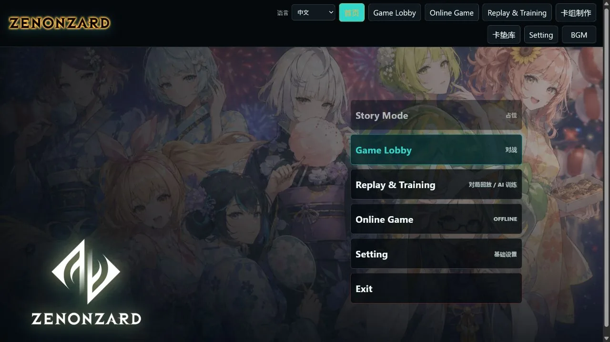

卡牌对战
完整处理 Mana、移动权、Force、Flash、战斗、触发与目标选择等核心流程。

Game Lobby
选择双方卡组、Codeman、卡垫与 AI 难度，然后进入你想要的对战方式。当前版本以完整的单机流程为核心。

你控制一方，另一方由所选难度的 AI 与 Codeman 配置驱动。这是最接近普通游玩的一种模式。
完整处理 Mana、移动权、Force、Flash、战斗、触发与目标选择等核心流程。
搜索卡池、检查张数与 Force 配置，并保存为大厅可直接选择的卡组。
保存最近对局并按事件回看；训练结果可以关联回放，寻找输局中的其他路线。
支持同一局域网直连，也支持通过项目维护者的个人服务器建立房间。
AI & Codeman
Easy 是 Greedy CPU；Medium 与 High 使用强化学习训练出的策略。训练规模有限，因此现阶段的定位是可玩的研究与娱乐功能，而不是高水平竞技对手。
当前说明
不加载训练模型，依据合法行动与人工启发式权重选择当前看来最有利的动作，运行快，也最容易理解。
作者拥有统计学学位，但没有修读强化学习课程，研究方向也与此无关；模型训练规模同样不大。当前 AI 与 ZENONZARD 正式运营时期万代使用的 AI 仍有明显差距。相关实现由 Codex 协助编写，并参考了 ygo-agent 的公开方法与工程结构。
ygo-agent ↗
CODEMAN MEMORY
对局结束后，系统会在本机保存该 Codeman 最近的一部分战斗记录与回放。若你为某个 Codeman 进行了专门训练，并生成了它自己的 .pt 模型，选择这个对手时会优先加载该专属模型；没有专属模型时则使用公开默认模型。
对战时点击自己的 Codeman，可以让 AI 对当前选择给出建议。由于模型能力有限，这更像一个可观察的娱乐助手，而不是可靠教练。
Actual UI

REPLAY & TRAINING
如果本机具备 NVIDIA GPU 与可用的 CUDA 环境，可以基于自己的对战记录运行本地训练。它仍是实验性的娱乐功能：一次输局也许能在 Replay 中发现另一个选择，但系统不会保证找到必胜解。
查看训练环境说明 →ONLINE GAME
Online Game 支持同一局域网内开房，也支持项目维护者的个人服务器。服务器位于加拿大，其他地区的稳定性未经充分验证；中国大陆通常需要代理才能稳定连接。
查看联机说明 →CONTENT STATUS
目前包含基本卡与 PC01，之后会逐步更新，直至补全卡池。
个人项目无法覆盖足够多的组合测试，当前版本可能仍有小型规则或界面问题。
英文版卡图直接使用官网链接，已知有图和卡没对齐的现象。英语圈的用户若能提供卡图资源和英文文本，此问题能轻易解决。
基础设置中可选择对战 BGM；完整资源包包含 ZZ 各角色歌曲。
INSTALLATION
GitHub 仓库保存源码、桌面客户端和当前默认模型；卡图、角色图、视频与音乐放在独立资源包中。解压到正确位置后即可启动。
从 GitHub Releases 下载源码包，或使用 Git 与 Git LFS 克隆仓库。
下载 ZZ-Assets-v1.zip，将其中的 asserts 文件夹放到项目根目录；最终应能看到 asserts/images、asserts/audio 等目录。
安装 Python 3.10+ 与 Node.js 20+，先安装 Python 运行依赖，再运行 npm install。
双击 launch-electron.cmd；也可以运行 npm run electron:dev。
STORY MODE
Story Mode 目前尚未开发。长期目标是设计由 Agent 自动与用户交互的游戏，对应实现 GAL 前端，并吸收 SillyTavern 相关社群在角色、世界书与长期互动方面积累的经验，构建个人专属的、与自己的 Codeman 一起经历的 ZZ 体验。
这是未来目标，不代表第一版已经提供生成式剧情功能。
CONTRIBUTE